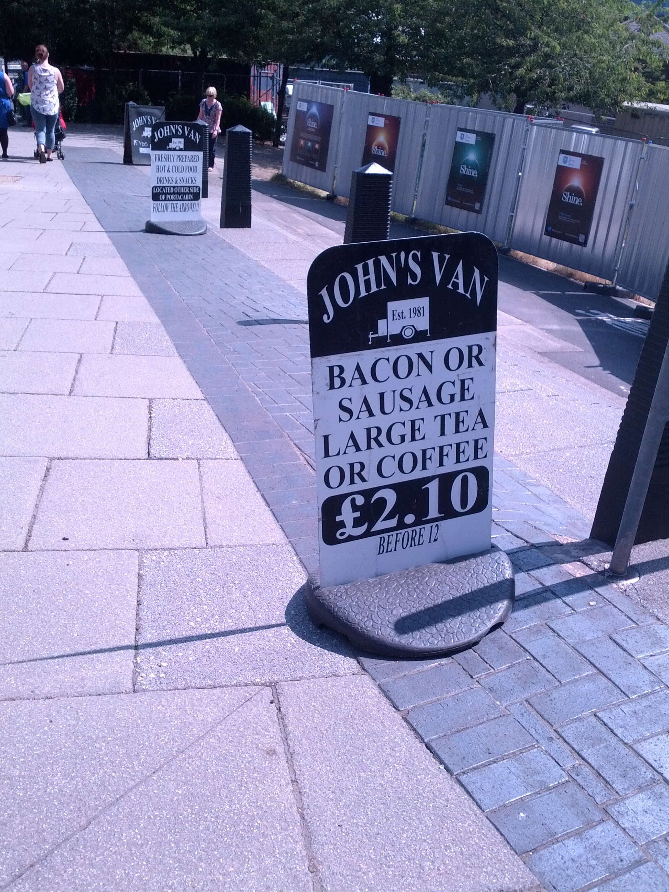

Figure: Karl Pearson (1857-1936), one of the founders of Mathematical Statistics.
.
.
There are three types of lies: lies, damned lies and statistics
Benjamin Disraeli 1804-1881
Benjamin Disraeli said1 that there three types of lies: lies, damned lies and statistics. Disraeli died in 1881, 30 years before the first academic department of applied statistics was founded at UCL. If Disraeli were alive today, it is likely that he'd rephrase his quote:
There are three types of lies, lies damned lies and big data.
Why? Because the challenges of understanding and interpreting big data today are similar to those that Disraeli faced in governing an empire through statistics in the latter part of the 19th century.
The quote lies, damned lies and statistics was credited to Benjamin Disraeli by Mark Twain in his autobiography. It characterizes the idea that statistic can be made to prove anything. But Disraeli died in 1881 and Mark Twain died in 1910. The important breakthrough in overcoming our tendency to overinterpet data came with the formalization of the field through the development of mathematical statistics.
Data has an elusive quality, it promises so much but can deliver little, it can mislead and misrepresent. To harness it, it must be tamed. In Disraeli's time during the second half of the 19th century, numbers and data were being accumulated, the social sciences were being developed. There was a large scale collection of data for the purposes of government.
The modern 'big data era' is on the verge of delivering the same sense of frustration that Disraeli experienced, the early promise of big data as a panacea is evolving to demands for delivery. For me, personally, peak-hype coincided with an email I received inviting collaboration on a project to deploy "Big Data and Internet of Things in an Industry 4.0 environment". Further questioning revealed that the actual project was optimization of the efficiency of a manufacturing production line, a far more tangible and realizable goal.
The antidote to this verbage is found in increasing awareness. When dealing with data the first trap to avoid is the games of buzzword bingo that we are wont to play. The first goal is to quantify what challenges can be addressed and what techniques are required. Behind the hype fundamentals are changing. The phenomenon is about the increasing access we have to data. The manner in which customers information is recorded and processes are codified and digitized with little overhead. Internet of things is about the increasing number of cheap sensors that can be easily interconnected through our modern network structures. But businesses are about making money, and these phenomena need to be recast in those terms before their value can be realized.
Karl Pearson (1857-1936), Ronald Fisher (1890-1962) and others considered the question of what conclusions can truly be drawn from data. Their mathematical studies act as a restraint on our tendency to over-interpret and see patterns where there are none. They introduced concepts such as randomized control trials that form a mainstay of the our decision making today, from government, to clinicians to large scale A/B testing that determines the nature of the web interfaces we interact with on social media and shopping.

Figure: Karl Pearson (1857-1936), one of the founders of Mathematical Statistics.
Their movement did the most to put statistics to rights, to eradicate the 'damned lies'. It was known as 'mathematical statistics'. Today I believe we should look to the emerging field of data science to provide the same role. Data science is an amalgam of statistics, data mining, computer systems, databases, computation, machine learning and artificial intelligence. Spread across these fields are the tools we need to realize data's potential. For many businesses this might be thought of as the challenge of 'converting bits into atoms'. Bits: the data stored on computer, atoms: the physical manifestation of what we do; the transfer of goods, the delivery of service. From fungible to tangible. When solving a challenge through data there are a series of obstacles that need to be addressed.
Firstly, data awareness: what data you have and where its stored. Sometimes this includes changing your conception of what data is and how it can be obtained. From automated production lines to apps on employee smart phones. Often data is locked away: manual log books, confidential data, personal data. For increasing awareness an internal audit can help. The website data.gov.uk hosts data made available by the UK government. To create this website the government's departments went through an audit of what data they each hold and what data they could make available. Similarly, within private buisnesses this type of audit could be useful for understanding their internal digital landscape: after all the key to any successful campaign is a good map.
Secondly, availability. How well are the data sources interconnected? How well curated are they? The curse of Disraeli was associated with unreliable data and unreliable statistics. The misrepresentations this leads to are worse than the absence of data as they give a false sense of confidence to decision making. Understanding how to avoid these pitfalls involves an improved sense of data and its value, one that needs to permeate the organization.
The final challenge is analysis, the accumulation of the necessary expertise to digest what the data tells us. Data requires intepretation, and interpretation requires experience. Analysis is providing a bottleneck due to a skill shortage, a skill shortage made more acute by the fact that, ideally, analysis should be carried out by individuals not only skilled in data science but also equipped with the domain knowledge to understand the implications in a given application, and to see opportunities for improvements in efficiency.
As a term 'big data' promises much and delivers little, to get true value from data, it needs to be curated and evaluated. The three stages of awareness, availability and analysis provide a broad framework through which organizations should be assessing the potential in the data they hold. Hand waving about big data solutions will not do, it will only lead to self-deception. The castles we build on our data landscapes must be based on firm foundations, process and scientific analysis. If we do things right, those are the foundations that will be provided by the new field of data science.
Today the statement "There are three types of lies: lies, damned lies and 'big data'" may be more apt. We are revisiting many of the mistakes made in interpreting data from the 19th century. Big data is laid down by happenstance, rather than actively collected with a particular question in mind. That means it needs to be treated with care when conclusions are being drawn. For data science to succede it needs the same form of rigour that Pearson and Fisher brought to statistics, a "mathematical data science" is needed.
You can also check my blog post on "Lies, Damned Lies and Big Data"
Machine learning allows us to extract knowledge from data to form a prediction.
$$\text{data} + \text{model} \xrightarrow{\text{compute}} \text{prediction}$$
A machine learning prediction is made by combining a model with data to form the prediction. The manner in which this is done gives us the machine learning algorithm.
Machine learning models are mathematical models which make weak assumptions about data, e.g. smoothness assumptions. By combining these assumptions with the data we observe we can interpolate between data points or, occasionally, extrapolate into the future.
Machine learning is a technology which strongly overlaps with the methodology of statistics. From a historical/philosophical view point, machine learning differs from statistics in that the focus in the machine learning community has been primarily on accuracy of prediction, whereas the focus in statistics is typically on the interpretability of a model and/or validating a hypothesis through data collection.
The rapid increase in the availability of compute and data has led to the increased prominence of machine learning. This prominence is surfacing in two different, but overlapping domains: data science and artificial intelligence.
The real challenge, however, is end-to-end decision making. Taking information from the enviroment and using it to drive decision making to achieve goals.
Machine learning technologies have been the driver of two related, but distinct disciplines. The first is data science. Data science is an emerging field that arises from the fact that we now collect so much data by happenstance, rather than by experimental design. Classical statistics is the science of drawing conclusions from data, and to do so statistical experiments are carefully designed. In the modern era we collect so much data that there's a desire to draw inferences directly from the data.
As well as machine learning, the field of data science draws from statistics, cloud computing, data storage (e.g. streaming data), visualization and data mining.
In contrast, artificial intelligence technologies typically focus on emulating some form of human behaviour, such as understanding an image, or some speech, or translating text from one form to another. The recent advances in artifcial intelligence have come from machine learning providing the automation. But in contrast to data science, in artifcial intelligence the data is normally collected with the specific task in mind. In this sense it has strong relations to classical statistics.
Classically artificial intelligence worried more about logic and planning and focussed less on data driven decision making. Modern machine learning owes more to the field of Cybernetics (Wiener 1948) than artificial intelligence. Related fields include robotics, speech recognition, language understanding and computer vision.
There are strong overlaps between the fields, the wide availability of data by happenstance makes it easier to collect data for designing AI systems. These relations are coming through wide availability of sensing technologies that are interconnected by celluar networks, WiFi and the internet. This phenomenon is sometimes known as the Internet of Things, but this feels like a dangerous misnomer. We must never forget that we are interconnecting people, not things.

|

|
|
| compute |
≈100 gigaflops |
≈16 petaflops |
| communicate |
1 gigbit/s |
100 bit/s |
| (compute/communicate) |
104 |
1014 |
There is a fundamental limit placed on our intelligence based on our ability to communicate. Claude Shannon founded the field of information theory. The clever part of this theory is it allows us to separate our measurement of information from what the information pertains to2.
Shannon measured information in bits. One bit of information is the amount of information I pass to you when I give you the result of a coin toss. Shannon was also interested in the amount of information in the English language. He estimated that on average a word in the English language contains 12 bits of information.
Given typical speaking rates, that gives us an estimate of our ability to communicate of around 100 bits per second (Reed and Durlach 1998). Computers on the other hand can communicate much more rapidly. Current wired network speeds are around a billion bits per second, ten million times faster.
When it comes to compute though, our best estimates indicate our computers are slower. A typical modern computer can process make around 100 billion floating point operations per second, each floating point operation involves a 64 bit number. So the computer is processing around 6,400 billion bits per second.
It's difficult to get similar estimates for humans, but by some estimates the amount of compute we would require to simulate a human brain is equivalent to that in the UK's fastest computer (Ananthanarayanan et al. 2009), the MET office machine in Exeter, which in 2018 ranks as the 11th fastest computer in the world. That machine simulates the world's weather each morning, and then simulates the world's climate in the afternoon. It is a 16 petaflop machine, processing around 1,000 trillion bits per second.


Figure: The Lotus 49, view from the rear. The Lotus 49 was one of the last Formula One cars before the introduction of aerodynamic aids.
So when it comes to our ability to compute we are extraordinary, not compute in our conscious mind, but the underlying neuron firings that underpin both our consciousness, our subconsciousness as well as our motor control etc.
If we think of ourselves as vehicles, then we are massively overpowered. Our ability to generate derived information from raw fuel is extraordinary. Intellectually we have formula one engines.
But in terms of our ability to deploy that computation in actual use, to share the results of what we have inferred, we are very limited. So when you imagine the F1 car that represents a psyche, think of an F1 car with bicycle wheels.


Figure: Marcel Renault races a Renault 40 cv during the Paris-Madrid race, an early Grand Prix, in 1903. Marcel died later in the race after missing a warning flag for a sharp corner at Couhé Vérac, likely due to dust reducing visibility.
Just think of the control a driver would have to have to deploy such power through such a narrow channel of traction. That is the beauty and the skill of the human mind.
In contrast, our computers are more like go-karts. Underpowered, but with well-matched tires. They can communicate far more fluidly. They are more efficient, but somehow less extraordinary, less beautiful.


Figure: Caleb McDuff driving for WIX Silence Racing.
For humans, that means much of our computation should be dedicated to considering what we should compute. To do that efficiently we need to model the world around us. The most complex thing in the world around us is other humans. So it is no surprise that we model them. We second guess what their intentions are, and our communication is only necessary when they are departing from how we model them. Naturally, for this to work well, we need to understand those we work closely with. So it is no surprise that social communication, social bonding, forms so much of a part of our use of our limited bandwidth.
There is a second effect here, our need to anthropomorphise objects around us. Our tendency to model our fellow humans extends to when we interact with other entities in our environment. To our pets as well as inanimate objects around us, such as computers or even our cars. This tendency to over interpret could be a consequence of our limited ability to communicate.
For more details see this paper "Living Together: Mind and Machine Intelligence", and this TEDx talk.
The high bandwidth of computers has resulted in a close relationship between the computer and data. Large amounts of information can flow between the two. The degree to which the computer is mediating our relationship with data means that we should consider it an intermediary.
Originaly our low bandwith relationship with data was affected by two characteristics. Firstly, our tendency to over-interpret driven by our need to extract as much knowledge from our low bandwidth information channel as possible. Secondly, by our improved understanding of the domain of mathematical statistics and how our cognitive biases can mislead us.
With this new set up there is a potential for assimilating far more information via the computer, but the computer can present this to us in various ways. If it's motives are not aligned with ours then it can misrepresent the information. This needn't be nefarious it can be simply as a result of the computer pursuing a different objective from us. For example, if the computer is aiming to maximize our interaction time that may be a different objective from ours which may be to summarize information in a representative manner in the shortest possible length of time.
For example, for me, it was a common experience to pick up my telephone with the intention of checking when my next appointment was, but to soon find myself distracted by another application on the phone, and end up reading something on the internet. By the time I'd finished reading, I would often have forgotten the reason I picked up my phone in the first place.
There are great benefits to be had from the huge amount of information we can unlock from this evolved relationship between us and data. In biology, large scale data sharing has been driven by a revolution in genomic, transcriptomic and epigenomic measurement. The improved inferences that that can be drawn through summarizing data by computer have fundamentally changed the nature of biological science, now this phenomenon is also infuencing us in our daily lives as data measured by happenstance is increasingly used to characterize us.
Better mediation of this flow actually requires a better understanding of human-computer interaction. This in turn involves understanding our own intelligence better, what its cognitive biases are and how these might mislead us.
For further thoughts see this Guardian article from 2015 on marketing in the internet era.
You can also check my blog post on "System Zero"

Figure: The trinity of human, data and computer, and highlights the modern phenomenon. The communication channel between computer and data now has an extremely high bandwidth. The channel between human and computer and the channel between data and human is narrow. New direction of information flow, information is reaching us mediated by the computer.


Figure: Feudal systems consist of serfs and vassals who are under the protection of a Lord. The Lord has a duty of care over the vassals, but due to power asymmetries that duty of care can be difficult to monitor and enforce. This is similar to the way our information is managed. Data controllers have a duty of care towards their data subjects, but there is also a power asymmetry between controller and subject.
Our current information infrastructure bears a close relation with feudal systems of government. In the feudal system a lord had a duty of care over his serfs and vassals, a duty to protect subjects. But in practice there was a power-asymetry. In feudal days protection was against Viking raiders, today, it is against information raiders. However, when there is an information leak, when there is some failure in protections, it is already too late.
Alternatively, our data is publicly shared, as in an information commons. Akin to common land of the medieval village. But just as commons were subject to overgrazing and poor management, so it is that much of our data cannot be managed in this way. In particularly personal, sensitive data.
I explored this idea further in this Guardian Op-Ed from 2015.

Figure: Challenges arise when the old meets new. New technologies bring opportunities and challenges.http://www.npr.org/2013/07/18/202335743/in-todays-beijing-flash-ferraris-and-fading-traditions

Figure: Modern Bejing traffic. If regulation isn't handled properly, the advantages fo the new technology are available to none, but the previous system has been broadly eliminated. Image from Wikimedia Commons.
Massive unstructured data sources.
|

|

|

Figure: John's Van in Sheffield provides reasonably priced tea and bacon butties. What is the health effect on those that live nearby?
Social network data, music information (Spotify), exercise.

Figure: Citizenme is an early UK start up in the personal data protection space.
Citizenme are a UK start up who were one of the early movers in the personal data space. They aim to return control of data to the individual.

As an example of using Gaussian process models within the full pipeline from data to decsion, we'll consider the prediction of Malaria incidence in Uganda. For the purposes of this study malaria reports come in two forms, HMIS reports from health centres and Sentinel data, which is curated by the WHO. There are limited sentinel sites and many HMIS sites.
The work is from Ricardo Andrade Pacheco's PhD thesis, completed in collaboration with John Quinn and Martin Mubangizi (Andrade-Pacheco et al. 2014; Mubangizi et al. 2014). John and Martin were initally from the AI-DEV group from the University of Makerere in Kampala and more latterly they were based at UN Global Pulse in Kampala.
Malaria data is spatial data. Uganda is split into districts, and health reports can be found for each district. This suggests that models such as conditional random fields could be used for spatial modelling, but there are two complexities with this. First of all, occasionally districts split into two. Secondly, sentinel sites are a specific location within a district, such as Nagongera which is a sentinel site based in the Tororo district.
(Andrade-Pacheco et al. 2014; Mubangizi et al. 2014)
The common standard for collecting health data on the African continent is from the Health management information systems (HMIS). However, this data suffers from missing values (Gething et al. 2006) and diagnosis of diseases like typhoid and malaria may be confounded.

Figure: The Tororo district, where the sentinel site, Nagongera, is located.
World Health Organization Sentinel Surveillance systems are set up "when high-quality data are needed about a particular disease that cannot be obtained through a passive system". Several sentinel sites give accurate assessment of malaria disease levels in Uganda, including a site in Nagongera.


Figure: Sentinel and HMIS data along with rainfall and temperature for the Nagongera sentinel station in the Tororo district.
In collaboration with the AI Research Group at Makerere we chose to investigate whether Gaussian process models could be used to assimilate information from these two different sources of disease informaton. Further, we were interested in whether local information on rainfall and temperature could be used to improve malaria estimates.
The aim of the project was to use WHO Sentinel sites, alongside rainfall and temperature, to improve predictions from HMIS data of levels of malaria.

Figure: The Mubende District.


Figure: Prediction of malaria incidence in Mubende.


Figure: The project arose out of the Gaussian process summer school held at Makerere in Kampala in 2013. The school led, in turn, to the Data Science Africa initiative.

Figure: The Kabarole district in Uganda.


Figure: Estimate of the current disease situation in the Kabarole district over time. Estimate is constructed with a Gaussian process with an additive covariance funciton.
Health monitoring system for the Kabarole district. Here we have fitted the reports with a Gaussian process with an additive covariance function. It has two components, one is a long time scale component (in red above) the other is a short time scale component (in blue).
Monitoring proceeds by considering two aspects of the curve. Is the blue line (the short term report signal) above the red (which represents the long term trend? If so we have higher than expected reports. If this is the case and the gradient is still positive (i.e. reports are going up) we encode this with a red color. If it is the case and the gradient of the blue line is negative (i.e. reports are going down) we encode this with an amber color. Conversely, if the blue line is below the red and decreasing, we color green. On the other hand if it is below red but increasing, we color yellow.
This gives us an early warning system for disease. Red is a bad situation getting worse, amber is bad, but improving. Green is good and getting better and yellow good but degrading.
Finally, there is a gray region which represents when the scale of the effect is small.


Figure: The map of Ugandan districts with an overview of the Malaria situation in each district.
These colors can now be observed directly on a spatial map of the districts to give an immediate impression of the current status of the disease across the country.

Figure: The deep health model uses different layers of abstraction in the deep Gaussian process to represent information about diagnostics and treatment to model interelationships between a patients different data modalities.
Since machine learning methods are so dependent on data, Understanding public attitudes to the use of their data is key to developing machine learning methods that maintain the trust of the public. Nowhere are the benefits of machine learning more profound, and the potential pitfalls more catastrophic than in the use of machine learning in health data.
The promise is for methods that take a personalized perspective on our individual health, but health data is some of the most sensitive data available to us. This is recognised both by the public and by regulation.
With this in mind The Wellcome Trust launched a report on "Understanding Patient Data" authored by Nicola Perrin, driven by the National Data Guardian's recommendations.
From this report we know that patients trust Universities and hospitals more than the trust commercial entities and insurers. However, there are a number of different ways in which data can be mishandled, it is not only the intent of the data-controllers that effects our data security.
For example, the recent WannaCry virus attack which demonstrated the unpreparedness of much of the NHS IT infrastructure for a virus exhibiting an exploit that was well known to the security community. The key point is that the public trust the intent of academics and medical professionals, but actual capability could be at variance with the intent.


Figure: Bush Pilot Grant McConachie. A Bush Pilot is expected to fly the plane, but also to be able to repair it in difficult and isolated conditions.
The situation is somewhat reminiscient of early aviation. This is where we are with our data science capabilities. By analogy, the engine of the plane is our data security infrastructure, the basic required technology to make us safe. The pilot is the health professional performing data analytics. The nature of the job of early pilots and indeed today's bush pilots (who fly to remote places) included a need to understand the mechanics of the engine. Just as a health data scientist, today, needs to deal with security of the infrastructure as well as the nature of the analysis.


Figure: British Airways 747 at SFO. Today airlines lease their engines from Rolls Royce who take care of maintenance independently from the pilot.
I suspect most passengers would find it disconcerting if the pilot of a 747 was seen working on the engine shortly before a flight. As aviation has become more widespread, there is now a separation of responsibilities between pilots and mechanics. For example, Rolls Royce goes so far as to maintain ownership of their engines, and lease them to the airline. The responsibility for maintenance of the engine is entirely with Rolls Royce, yet the pilot is responsibility for the safety of the aircraft and its passengers.
We need to develop a modern data-infrastructure for which separates the need for security of infrastructure from the decision making of the data analyst.
This separation of responsibility according to expertise needs to be emulated when considering health data infrastructure. This resolves the intent-capability dilemma, by ensuring a separation of responsibilities to those that are best placed to address the issues.
We must also be careful to maintain openness in this new genaration of digital solutions for patient care. Matthew Syed's book, "Black Box Thinking" (Syed 2015), emphasizes the importance of surfacing errors as a route to learning and improved process. Taking aviation as an example, and contrasting it with the culture in medicine, Matthew relates the story of Martin Bromiley, an airline pilot whose wife died during a routine hospital procedure and his efforts to improve the culture of safety in medicine. The motivation for the book is the difference in culture between aviation and medicine in how errors are acknowledged and dealt with. We must ensure that these high standards of oversight apply to the era of data-driven automated decision making.
In particular, while there is much to be gained by involving comemrcial companies, if the process by which they are drawing inference about patient condition is hidden (for example, due to commercial confidentiality), this may prevent us from understanding errors in diagnosis or treatment. This would be a retrograde step. It may be that health device certification needs modification or reform for data-driven automated decision making, but we need a spirit of transparency around how these systems are deriving their inferences to ensure best practice.
The machine learning solutions we are dependent on to drive automated decision making are dependent on data. But with regard to personal data there are important issues of privacy. Data sharing brings benefits, but also exposes our digital selves. From the use of social media data for targeted advertising to influence us, to the use of genetic data to identify criminals, or natural family members. Control of our virtual selves maps on to control of our actual selves.
The fuedal system that is implied by current data protection legislation has signficant power asymmetries at its heart, in that the data controller has a duty of care over the data subject, but the data subject may only discover failings in that duty of care when it's too late. Data controllers also may have conflicting motivations, and often their primary motivation is not towards the data-subject, but that is a consideration in their wider agenda.
Data Trusts (Edwards 2004; Lawrence 2016; Delacroix and Lawrence 2018) are a potential solution to this problem. Inspired by land societies that formed in the 19th century to bring democratic representation to the growing middle classes. A land society was a mutual organisation where resources were pooled for the common good.
A Data Trust would be a legal entity where the trustees responsibility was entirely to the members of the trust. So the motivation of the data-controllers is aligned only with the data-subjects. How data is handled would be subject to the terms under which the trust was convened. The success of an individual trust would be contingent on it satisfying its members with appropriate balancing of individual privacy with the benefits of data sharing.
Formation of Data Trusts became the number one recommendation of the Hall-Presenti report on AI, but the manner in which this is done will have a significant impact on their utility. It feels important to have a diversity of approaches, and yet it feels important that any individual trust would be large enough to be taken seriously in representing the views of its members in wider negotiations.
Ananthanarayanan, Rajagopal, Steven K. Esser, Horst D. Simon, and Dharmendra S. Modha. 2009. “The Cat Is Out of the Bag: Cortical Simulations with 109 Neurons, 1013 Synapses.” In Proceedings of the Conference on High Performance Computing Networking, Storage and Analysis - Sc ’09. doi:10.1145/1654059.1654124.
Andrade-Pacheco, Ricardo, Martin Mubangizi, John Quinn, and Neil D. Lawrence. 2014. “Consistent Mapping of Government Malaria Records Across a Changing Territory Delimitation.” Malaria Journal 13 (Suppl 1). doi:10.1186/1475-2875-13-S1-P5.
Delacroix, Sylvie, and Neil D. Lawrence. 2018. “Disturbing the ‘One Size Fits All’ Approach to Data Governance: Bottom-up Data Trusts.” SSRN. doi:10.2139/ssrn.3265315.
Edwards, Lilian. 2004. “The Problem with Privacy.” International Review of Law Computers & Technology 18 (3): 263–94.
Gething, Peter W., Abdisalan M. Noor, Priscilla W. Gikandi, Esther A. A. Ogara, Simon I. Hay, Mark S. Nixon, Robert W. Snow, and Peter M. Atkinson. 2006. “Improving Imperfect Data from Health Management Information Systems in Africa Using Space–Time Geostatistics.” PLoS Medicine 3 (6). Public Library of Science. doi:10.1371/journal.pmed.0030271.
Lawrence, Neil D. 2016. “Data Trusts Could Allay Our Privacy Fears.” The Guardian Media & Tech Network. https://www.theguardian.com/media-network/2016/jun/03/data-trusts-privacy-fears-feudalism-democracy.
Mubangizi, Martin, Ricardo Andrade-Pacheco, Michael Thomas Smith, John Quinn, and Neil D. Lawrence. 2014. “Malaria Surveillance with Multiple Data Sources Using Gaussian Process Models.” In 1st International Conference on the Use of Mobile Ict in Africa.
Reed, Charlotte, and Nathaniel I. Durlach. 1998. “Note on Information Transfer Rates in Human Communication.” Presence Teleoperators & Virtual Environments 7 (5): 509–18. doi:10.1162/105474698565893.
Syed, Matthew. 2015. Black Box Thinking: The Surprising Truth About Success. John Murray.
Wiener, Norbert. 1948. Cybernetics: Control and Communication in the Animal and the Machine. Cambridge, MA: MIT Press.
the challenge of understanding what information pertains to is known as knowledge representation.↩


{kind=link}
{kind=link}